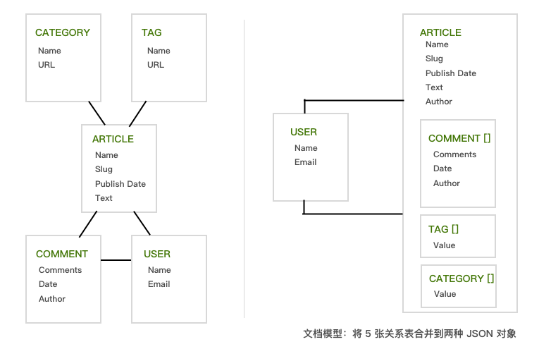
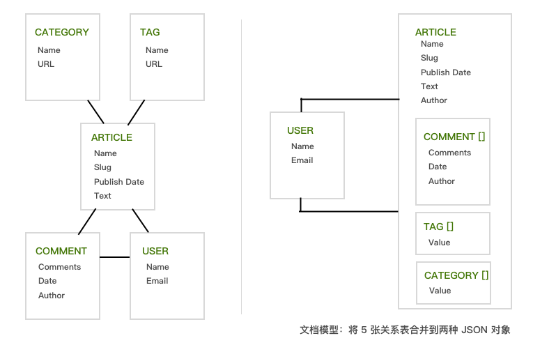

其他语言代码示例 Objective-C Android JavaScript Python
其他语言代码示例
多年以来，关系型数据库已经成为了企业数据管理的基础，很多工程师对于关系模型和 6 个范式都比较了解，但是如今来构建和运行一个应用，随着数据来源的越发多样和用户量的不断增长，关系数据库的限制逐渐成为业务的瓶颈，因此越来越多的公司开始向其它 NoSQL 数据库进行迁移。
众所周知，LeanCloud 存储后台大量采用了 MongoDB 这种文档数据库来存储结构化数据，正因如此我们才能提供面向对象的、海量的、schema free 的存储能力。从传统的关系型数据库转换到 LeanCloud（or MongoDB）存储系统，最基础的改变就是数据建模，也就是「schema 设计」。
在探索 schema 设计之前，我们先统一一下关系型数据库、MongoDB 和 LeanCloud 上的对应术语，如下表所示：
关系型数据库和文档型数据库的根本区别在于：
在 LeanCloud 上进行 Schema 设计需要数据架构师、开发人员和 DBA 在观念上做一些转变：之前是传统的关系型数据模型，所有数据都会被映射到二维的表结构——行和列；现在是丰富、动态的对象模型（也就是 MongoDB 的「文档模型」），包括内嵌子对象和数组。
后文中我们有时候采用 LeanCloud 的核心概念Object（对象），有时候提到 MongoDB 中的名词Document（文档），他们是等同的。
我们现在使用的大部分数据，都有比较复杂的结构，用 「JSON 对象」来建模是比「表」更高效的方式。通过内嵌子对象和数组，JSON 对象可以和应用层的数据结构完全对齐。这对开发者来说，会更容易将应用层的数据映射到数据库里的对象。相反，将应用层的数据映射到关系数据库的表，则会降低开发效率，而比较普遍的增加额外的对象关系映射（ORM）层的做法，也同时降低了 schema 扩展和查询优化的灵活性，引入了新的复杂度。
例如，在 RDBMS 中有父子关系的两张表，通常就会变成 LeanCloud 里面含有内嵌子对象的单文档结构。以下图的数据为例：
RDBMS 中通过 Pers_ID 域来连接 PERSON 表和 CAR 表，以此支持应用中显示每辆车的拥有者信息。使用文档模型，通过内嵌子对象和数组可以将相关数据提前合并到一个单一的数据结构中，传统的跨表的行和列现在都被存储到了一个文档内，完全省略掉了 join 操作。
换成 LeanCloud 来对同样的数据建模，则允许我们创建这样的 schema：一个单一的 Person 对象，里面通过一个子对象数组来保存该用户所拥有的每一部 Car，例如：
{ first_name:"红", surname: "柳", city:"London", location:[45.123,47.232], cars:[ {model:"大众迈腾", year: 2015, value:180000,...}, {model:"丰田汉兰达", year: 2016, value:240000,...} ] }
文档数据库里的一篇文档，就相当于 LeanCloud 平台里的一个对象。这个例子里的关系模型虽然只由两张表组成（现实中大部分应用可能需要几十、几百甚至上千张表），但是它并不影响我们思考数据的方式。
为了更好地展示关系模型和文档模型的区别，我们考虑下图所示的博客平台的例子。在这里，依赖 RDBMS 的应用需要 join 5 张不同的表来获得一篇博客的完整数据，而在 LeanCloud 中，所有的博客数据都包含在一个文档中，博客作者和评论者的用户信息则通过一个到 User 的引用（指针）进行关联。

除了数据表现更加自然之外，文档模型还有性能和扩展性方面的优势：
应用的数据访问模式决定了 schema 设计，因此我们需要特别明确以下几点：
以此来设计更合适的 schema 结构。
对于普通的「属性名－值」对来说，设计比较简单，和 RDBMS 中平坦的表结构差别不大。对于 1:1 或 1:many 的关系会很自然地考虑使用内嵌对象：
例如，为了记录每个学生的家庭住址，我们可以把住址信息作为一个整体嵌入 Student 类里面。
AVObject *studentTom = [[AVObject alloc] initWithClassName:@"Student"];// 学生 Tom [studentTom setObject:@"Tom" forKey:@"name"]; NSDictionary *addr = [NSDictionary dictionaryWithObjectsAndKeys: @"北京", @"city", @"西城区西长安街 1 号", @"address", @"100017", @"postcode", nil]; [studentTom setObject:addr forKey:@"address"]; [studentTom saveInBackground];// 保存到云端
但并不是所有的 1:1 关系都适合内嵌的方式，对下面的情况后文介绍的「引用」（等同于 MongoDB 的 reference）方式会更加合适：
reference
接下来我们重点讨论一下在 LeanCloud 上如何通过「引用」机制来实现复杂的关系模型。
数据对象之间存在 3 种类型的关系。一对一关系将一个对象与另一个对象关联，一对多关系是一个对象关联多个对象，多对多关系则用来实现大量对象之间的复杂关系。我们支持 4 种方式来构建对象之间的关系（都是通过 MongoDB 的文档引用来实现的）：
在创建一对多关系时，选择用 Pointers 还是 Arrays 来实现，需要考虑关系中包含的对象数量。如果关系「多」方包含的对象数量非常大（大于 100 左右），那么就必须使用 Pointers。反之，如果对象数量很小（低于 100 或更少），那么 Arrays 可能会更方便，特别是在获取父对象的同时得到所有相关的对象，即一对多关系中的「多」。
中国的「省份」与「城市」具有典型的一对多的关系。深圳和广州（城市）都属于广东省（省份），而朝阳区和海淀区（行政区）只能属于北京市（直辖市）。广东省对应着多个一级行政城市，北京对应着多个行政区。下面我们使用 Pointers 来存储这种一对多的关系。
AVObject *GuangZhou = [[AVObject alloc] initWithClassName:@"City"];// 广州 [GuangZhou setObject:@"广州" forKey:@"name"]; AVObject *GuangDong = [[AVObject alloc] initWithClassName:@"Province"];// 广东 [GuangDong setObject:@"广东" forKey:@"name"]; [GuangZhou setObject:GuangDong forKey:@"dependent"];// 为广州设置 dependent 属性为广东 [GuangZhou saveInBackgroundWithBlock:^(BOOL succeeded, NSError *error) { if (succeeded) { // 广州被保存成功 } }]; // 广东无需被单独保存，因为在保存广州的时候已经上传到云端。
注意：保存关联对象的同时，被关联的对象也会随之被保存到云端。
要关联一个已经存在于云端的对象，例如将「东莞市」添加至「广东省」，方法如下：
// 假设 GuangDong 的 objectId 为 56545c5b00b09f857a603632 AVObject *GuangDong = [AVObject objectWithoutDataWithClassName:@"Province" objectId:@"56545c5b00b09f857a603632"]; AVObject *DongGuan = [[AVObject alloc] initWithClassName:@"City"];// 东莞 [DongGuan setObject:@"东莞" forKey:@"name"]; [DongGuan setObject:GuangDong forKey:@"dependent"];// 为东莞设置 dependent 属性为广东
执行上述代码后，在应用控制台可以看到 dependent 字段显示为 Pointer 数据类型，而它本质上存储的是一个指向 City 这张表的某个 AVObject 的指针。
dependent
City
假如已知一个城市，想知道它的上一级的省份：
// 假设东莞作为 City 对象存储的时候它的 objectId 是 568e743c00b09aa22162b11f，这个 objectId 可以在控制台查看 AVObject *DongGuan = [AVObject objectWithoutDataWithClassName:@"City" objectId:@"568e743c00b09aa22162b11f"]; NSArray *keys = [NSArray arrayWithObjects:@"dependent", nil]; [DongGuan fetchInBackgroundWithKeys:keys block:^(AVObject *object, NSError *error) { // 获取广东省 AVObject *province = [object objectForKey:@"dependent"]; }];
假如查询结果中包含了城市，并想通过一次查询同时把对应的省份也一并加载到本地：
AVQuery *query = [AVQuery queryWithClassName:@"City"]; // 查询名字是广州的城市 [query whereKey:@"name" equalTo:@"广州"]; // 找出对应城市的省份 [query includeKey:@"dependent"]; [query findObjectsInBackgroundWithBlock:^(NSArray *cities, NSError *error) { // cities 的结果为 name 等于广州的城市的集合，当然我们知道现实中只存在一个广州市 for (AVObject *city in cities) { // 并不需要网络访问 // 获取对应的省份 AVObject *province = [city objectForKey:@"dependent"]; } }];
假如已知一个省份，要找出它的所有下辖城市：
// 假设 GuangDong 的 objectId 为 56545c5b00b09f857a603632 AVObject *GuangDong = [AVObject objectWithoutDataWithClassName:@"Province" objectId:@"56545c5b00b09f857a603632"]; AVQuery *query = [AVQuery queryWithClassName:@"City"]; [query whereKey:@"dependent" equalTo:GuangDong]; [query findObjectsInBackgroundWithBlock:^(NSArray *cities, NSError *error) { for (AVObject *city in cities) { // cities 的结果为广东省下辖的所有城市 } }];
大多数场景下，Pointers 是实现一对多关系的最好选择。
当一对多关系中所包含的对象数量很少时，使用 Arrays 比较理想。Arrays 可以通过 includeKey 简化查询。传递对应的 key 可以在获取「一」方对象数据的同时获取到所有「多」方对象的数据。但是如果关系中包含的对象数量巨大，查询将响应缓慢。
includeKey
城市与省份对应关系也可以使用 Arrays 实现。我们重新建立对象，为 Province 表添加一列 cityList 来保存城市数组：
Province
cityList
AVObject *GuangDong = [[AVObject alloc] initWithClassName:@"Province"];// 广东 [GuangDong setObject:@"广东" forKey:@"name"]; AVObject *GuangZhou = [[AVObject alloc] initWithClassName:@"City"];// 广州 [GuangZhou setObject:@"广州" forKey:@"name"]; AVObject *ShenZhen = [[AVObject alloc] initWithClassName:@"City"];// 深圳 [ShenZhen setObject:@"深圳" forKey:@"name"]; // 把广州和深圳放置在一个数组里面，然后把这个数组设置为广东的 cityList 属性 NSArray *cityList = [NSArray arrayWithObjects:GuangZhou, ShenZhen, nil]; [AVObject saveAllInBackground:cityList block:^(BOOL succeeded, NSError *error) { [GuangDong addUniqueObjectsFromArray:[NSArray arrayWithObjects:GuangZhou, ShenZhen, nil] forKey:@"cityList"]; // 只要保存 GuangDong 即可，它关联的对象都会一并被保存在云端。 [GuangDong saveInBackground]; }];
获取这些 City 对象：
// 假设 GuangDong 的 objectId 是 56a740071532bc0053f335e6 AVObject *GuangDong = [AVObject objectWithoutDataWithClassName:@"Province" objectId:@"56a740071532bc0053f335e6"]; [GuangDong fetchIfNeededWithKeys:[NSArray arrayWithObjects:@"cityList",nil]]; [GuangDong fetchIfNeededInBackgroundWithBlock:^(AVObject *object, NSError *error) { NSArray *cityList = [GuangDong objectForKey:@"cityList"]; for (AVObject *city in cityList) { // cityList 的结果为广东省下辖的所有城市 // 下面可以打印出所有城市的 objectId NSLog(@"objectId: %@", city.objectId); // 下面可以打印出所有城市的 name NSLog(@"name: %@", [city objectForKey:@"name"]); } }];
如果要在查询某一个省份的时候，顺便把所有下辖的城市也获取到本地，可以在构建查询的时候使用 includeKey 操作，这样就可以通过一次查询同时获取 cityList 列中存放的 City 对象集合：
AVQuery *query = [AVQuery queryWithClassName:@"Province"]; [query whereKey:@"name" equalTo:@"广东"]; // 以下这条语句是关键语句 [query includeKey:@"cityList"]; [query findObjectsInBackgroundWithBlock:^(NSArray *objects, NSError *error) { // objects 是查询 Province 这张表的结果，因为我们是根据 name 查询的，表中 name 等于广东的有且只有一个数据 // 因此这个集合有且只有一个数据 for (AVObject *province in objects) { NSArray *cityList = [province objectForKey:@"cityList"]; for (AVObject *city in cityList) { // cityList 的结果为广东省下辖的所有城市 // 下面可以打印出所有城市的 objectId NSLog(@"objectId: %@", city.objectId); // 下面可以打印出所有城市的 name NSLog(@"name: %@", [city objectForKey:@"name"]); } } }];
我们同样也可以根据已知的城市来查询它所属的上级省份，例如找出南京所属的省份：
AVObject *NanJing = [AVObject objectWithoutDataWithClassName:@"City" objectId:@"56a74006d342d30054168a29"]; AVQuery *query = [AVQuery queryWithClassName:@"Province"]; [query whereKey:@"cityList" equalTo:NanJing]; [query getFirstObjectInBackgroundWithBlock:^(AVObject *province, NSError *error) { // province 就是查询出来的省份，这里使用 getFirstObjectInBackgroundWithBlock 这个借口原因是我们默认情况下「南京」只可能属于一个省份 NSLog(@"name: %@", [province objectForKey:@"name"]); // 上述语句理论上会打印出「江苏」 }];
假设有选课应用，我们需要为 Student 对象和 Course 对象建模。一个学生可以选多门课程，一个课程也有多个学生，这是一个典型的多对多关系。我们必须使用 Arrays、Relation 或创建自己的关联表来实现这种关系。决策的关键在于是否需要为这个关系附加一些属性。
Student
Course
如果不需要附加属性，使用 Relation 或 Arrays 最为简单。通常情况下，使用 Arrays 可以使用更少的查询并获得更好的性能。如果多对多关系中任何一方对象数量可能达到或超过 100，使用 Relation 或关联表是更好的选择。
反之，若需要为关系附加一些属性，就创建一个独立的表（关联表）来存储两端的关系。记住，附加的属性是描述这个关系的，不是描述关系中的任何一方。所附加的属性可以是：
一个学生可以学习「多」门课程，一门课程也可以拥有「多」个学生。我们可以使用 Relation 构建 Student 和 Course 之间的关系。
为一个学生选择多门课程：
AVObject *studentTom = [[AVObject alloc] initWithClassName:@"Student"];// 学生 Tom [studentTom setObject:@"Tom" forKey:@"name"]; AVObject *courseLinearAlgebra = [[AVObject alloc] initWithClassName:@"Course"];// 线性代数 [courseLinearAlgebra setObject:@"Linear Algebra" forKey:@"name"]; AVObject *courseObjectOrientedProgramming = [[AVObject alloc] initWithClassName:@"Course"];// 面向对象程序设计 [courseObjectOrientedProgramming setObject:@"Object-Oriented Programming" forKey:@"name"]; AVObject *courseOperatingSystem = [[AVObject alloc] initWithClassName:@"Course"];// 操作系统 [courseOperatingSystem setObject:@"Operating System" forKey:@"name"]; [AVObject saveAllInBackground:@[courseLinearAlgebra,courseObjectOrientedProgramming,courseOperatingSystem] block:^(BOOL succeeded, NSError *error) { if (error) { // 出现错误 } else { // 保存成功 AVRelation *relation = [studentTom relationforKey:@"coursesChosen"];// 新建一个 AVRelation，用来保存所选的课程 [relation addObject:courseLinearAlgebra]; [relation addObject:courseObjectOrientedProgramming]; [relation addObject:courseOperatingSystem]; [studentTom saveInBackground]; } }];
要获取某个课程的所有学生，使用如下查询即可：
// 微积分课程 AVObject *courseCalculus = [AVObject objectWithoutDataWithClassName:@"Course" objectId:@"562da3fdddb2084a8a576d49"]; // 构建 Student 的查询 AVQuery *query = [AVQuery queryWithClassName:@"Student"]; // 查询条件 [query whereKey:@"coursesChosen" equalTo:courseCalculus]; // 执行查询 [query findObjectsInBackgroundWithBlock:^(NSArray *students, NSError *error) { // students 就是所有选择了微积分的学生 for (AVObject *student in students) { // 打印 student 的 objectId 以及 name NSLog(@"objectId: %@", student.objectId); NSLog(@"name: %@", [student objectForKey:@"name"]); } }];
要获取某个学生学习的所有的课程，你可以构造一个稍微不同的查询来获取这种反向关系的结果：
// 假设 Tom 被保存到云端之后的 objectId 是 562da3fdddb2084a8a576d49 AVObject *studentTom = [AVObject objectWithoutDataWithClassName:@"Student" objectId:@"562da3fdddb2084a8a576d49"]; // 读取 AVRelation 对象 AVRelation *relation = [studentTom relationforKey:@"coursesChosen"]; // 获取关系查询 AVQuery *query = [relation query]; [query findObjectsInBackgroundWithBlock:^(NSArray *courses, NSError *error) { // courses 就是当前学生 Tom 所选择的所有课程 for (AVObject *course in courses) { // 打印 course 的 objectId 以及 name NSLog(@"objectId: %@", course.objectId); NSLog(@"name: %@", [course objectForKey:@"name"]); } }];
有时我们需要知道更多关系的附加信息，比如在一个学生选课系统中，我们要了解学生打算选修的这门课的课时有多长，或者学生选修是通过手机选修还是通过网站操作的，这个时候单独使用 AVRelation 就无法满足需求了，因为 AVRelation 不支持额外的自定义属性，此时我们可以使用传统的数据模型设计方法：关联表。
AVRelation
为此，我们创建一个独立的表 StudentCourseMap 来保存 Student 和 Course 的关系：
StudentCourseMap
course
student
duration
["2016-02-19","2016-04-21"]
platform
iOS
如此，实现选修功能的代码如下：
AVObject *studentTom = [[AVObject alloc] initWithClassName:@"Student"];// 学生 Tom [studentTom setObject:@"Tom" forKey:@"name"]; AVObject *courseLinearAlgebra = [[AVObject alloc] initWithClassName:@"Course"];// 线性代数 [courseLinearAlgebra setObject:@"Linear Algebra" forKey:@"name"]; AVObject *studentCourseMapTom= [[AVObject alloc] initWithClassName:@"StudentCourseMap"];// 选课表对象 // 设置关联 [studentCourseMapTom setObject:studentTom forKey:@"student"]; [studentCourseMapTom setObject:courseLinearAlgebra forKey:@"course"]; // 设置学习周期 [studentCourseMapTom setObject: [NSArray arrayWithObjects:@"2016-02-19",@"2016-04-21",nil] forKey:@"duration"]; // 获取操作平台 [studentCourseMapTom setObject: @"iOS" forKey:@"platform"]; // 保存选课表对象 [studentCourseMapTom saveInBackground];
查询选修了某一课程的所有学生：
// 微积分课程 AVObject *courseCalculus = [AVObject objectWithoutDataWithClassName:@"Course" objectId:@"562da3fdddb2084a8a576d49"]; // 构建 StudentCourseMap 的查询 AVQuery *query = [AVQuery queryWithClassName:@"StudentCourseMap"]; // 查询所有选择了线性代数的学生 [query whereKey:@"course" equalTo:courseCalculus]; // 执行查询 [query findObjectsInBackgroundWithBlock:^(NSArray *studentCourseMaps, NSError *error) { // studentCourseMaps 是所有 course 等于线性代数的选课对象 // 然后遍历过程中可以访问每一个选课对象的 student,course,duration,platform 等属性 for (AVObject *studentCourseMap in studentCourseMaps) { AVObject *student =[studentCourseMap objectForKey:@"student"]; AVObject *course =[studentCourseMap objectForKey:@"course"]; NSArray *duration = [studentCourseMap objectForKey:@"duration"]; NSLog(@"platform: %@", [studentCourseMap objectForKey:@"platform"]); } }];
同样我们也可以很简单地查询某一个学生选修的所有课程，只需将上述代码变换查询条件即可：
AVObject *studentTom = [AVObject objectWithoutDataWithClassName:@"Student" objectId:@"562da3fc00b0bf37b117c250"]; [query whereKey:@"student" equalTo:studentTom];
使用 Arrays 实现多对多关系，跟实现一对多关系大致相同。关系中一方的所有对象拥有一个数组列来包含关系另一方的一些对象。
以选课系统为例，现在我们使用 Arrays 方式来实现学生选课的操作：
AVObject *studentTom = [[AVObject alloc] initWithClassName:@"Student"];// 学生 Tom [studentTom setObject:@"Tom" forKey:@"name"]; AVObject *courseLinearAlgebra = [[AVObject alloc] initWithClassName:@"Course"];// 线性代数 [courseLinearAlgebra setObject:@"Linear Algebra" forKey:@"name"]; AVObject *courseObjectOrientedProgramming = [[AVObject alloc] initWithClassName:@"Course"];// 面对对象程序设计 [courseObjectOrientedProgramming setObject:@"Object-Oriented Programming" forKey:@"name"]; AVObject *courseOperatingSystem = [[AVObject alloc] initWithClassName:@"Course"];// 操作系统 [courseOperatingSystem setObject:@"Operating System" forKey:@"name"]; // 所选课程的数组 NSArray *courses = [NSArray arrayWithObjects:courseLinearAlgebra,courseObjectOrientedProgramming,courseOperatingSystem,nil]; // 使用属性名字 coursesChosen 保存所选课程的数组 [studentTom setObject:courses forKey:@"coursesChosen"]; // 保存在云端 [studentTom saveInBackground];
当查询某一个学生选修的所有课程时，需要使用 includeKey 操作来获取对应的数组值：
AVQuery *query = [AVQuery queryWithClassName:@"Student"]; [query whereKey:@"name" equalTo:@"Tom"]; // 以下这条语句是关键语句 [query includeKey:@"coursesChosen"]; [query findObjectsInBackgroundWithBlock:^(NSArray *objects, NSError *error) { // objects 是查询 Student 这张表的结果，因为我们是根据 name 查询的，我们假设表中 name 等于 Tom 的学生有且只有一个数据 // 因此这个集合有且只有一个数据 for (AVObject *tom in objects) { NSArray *coursesChosenArray = [tom objectForKey:@"coursesChosen"]; for (AVObject *course in coursesChosenArray) { // coursesChosenArray 的结果为 Tom 选修的所有课程 // 下面可以打印出所有课程的 objectId NSLog(@"objectId: %@", course.objectId); // 下面可以打印出所有课程的 name NSLog(@"name: %@", [course objectForKey:@"name"]); } } }];
查找选修了某一个课程的所有学生：
// 假设线性代数的 objectId 是 562da3fd60b2c1e233c9b250 AVObject *courseLinearAlgebra = [AVObject objectWithoutDataWithClassName:@"Course" objectId:@"562da3fd60b2c1e233c9b250"]; // 构建针对 Student 这张表的查询 AVQuery *query = [AVQuery queryWithClassName:@"Student"]; [query whereKey:@"coursesChosen" equalTo:courseLinearAlgebra]; [query findObjectsInBackgroundWithBlock:^(NSArray *students, NSError *error) { // students 即为所有选择了线性代数这门课的学生 for (AVObject *student in students) { // 下面可以打印出所有学生的 objectId NSLog(@"objectId: %@", student.objectId); // 下面可以打印出学生的 name NSLog(@"name: %@", [student objectForKey:@"name"]); } }];
当你需要将一个对象拆分成两个对象时，一对一关系是一种重要的需求。这种需求应该很少见，但是在下面的实例中体现了这样的需求：
当表中有一个 Pointer 或 Relation 指向的源数据被删除时，这个源数据对应的 Pointer 和 Relation 不会被自动删除。所以建议用户在删除源数据时自行检查是否有 Pointer 或 Relation 指向这条数据，基于业务场景有必要做数据清理的话，可以调用对应的对象上的删除接口将 Pointer 或 Relation 关联的对象删除。
在任何一个数据库系统中，索引都是优化性能的重要手段，同时它与 schema 设计也是密不可分的。LeanCloud 也支持索引，其索引与关系数据库中基本相同。在索引的选择上，应用查询操作的模式和频率起决定性作用，同时我们也要明白，索引不是没有代价的，在加速查询的同时，它也会降低写入速度、消耗更多存储（磁盘和内存）资源。是否建索引，如何建索引，建多少索引，我们需要综合权衡后来下决定。
LeanCloud 的索引可以包含任意的属性（包括数组），下面是一些索引选项：
LeanCloud 的索引可以在任何域上建立，包括内嵌对象和数组类型，这使它带来了比 RDBMS 更强大的功能。
LeanCloud 后台会根据每天的访问日志，自动归纳、学习频繁使用的访问模式，并自动创建合适的索引。不过如果你对索引优化比较有经验，也可以在控制台为每一个 Class 手动创建索引。
在 LeanCloud 的存储系统里，Class 可以在没有完整的结构定义（包含哪些属性，数据类型如何，等）时就提前创建好，一个 Class 下的对象（Object）也无需包含所有属性域，我们可以随时往对象中增减新的属性。
这种灵活、动态的 schema 机制，使 schema 的持续优化变得非常简单。相比之下，关系数据库的开发人员和 DBA 在开始一个新项目的时候，写下第一行代码之前，就需要制定好数据库 schema，这至少需要几天，有的需要数周甚至更长。而 LeanCloud 则允许开发者通过不断迭代和敏捷过程，持续优化 schema。开发者可以开始写代码并将他们创建的对象持久化存储起来，以后当需要增加新的功能，LeanCloud 可以继续存储新的对象而不需要对原来的 Class 做 ALTER TABLE 操作，这会给我们的开发带来很大的便利。
数据模型设计指南 · Objective-C
多年以来，关系型数据库已经成为了企业数据管理的基础，很多工程师对于关系模型和 6 个范式都比较了解，但是如今来构建和运行一个应用，随着数据来源的越发多样和用户量的不断增长，关系数据库的限制逐渐成为业务的瓶颈，因此越来越多的公司开始向其它 NoSQL 数据库进行迁移。
众所周知，LeanCloud 存储后台大量采用了 MongoDB 这种文档数据库来存储结构化数据，正因如此我们才能提供面向对象的、海量的、schema free 的存储能力。从传统的关系型数据库转换到 LeanCloud（or MongoDB）存储系统，最基础的改变就是数据建模，也就是「schema 设计」。
Schema 设计
在探索 schema 设计之前，我们先统一一下关系型数据库、MongoDB 和 LeanCloud 上的对应术语，如下表所示：
关系型数据库和文档型数据库的根本区别在于：
在 LeanCloud 上进行 Schema 设计需要数据架构师、开发人员和 DBA 在观念上做一些转变：之前是传统的关系型数据模型，所有数据都会被映射到二维的表结构——行和列；现在是丰富、动态的对象模型（也就是 MongoDB 的「文档模型」），包括内嵌子对象和数组。
从死板的「表」结构到灵活、动态的「文档」
我们现在使用的大部分数据，都有比较复杂的结构，用 「JSON 对象」来建模是比「表」更高效的方式。通过内嵌子对象和数组，JSON 对象可以和应用层的数据结构完全对齐。这对开发者来说，会更容易将应用层的数据映射到数据库里的对象。相反，将应用层的数据映射到关系数据库的表，则会降低开发效率，而比较普遍的增加额外的对象关系映射（ORM）层的做法，也同时降低了 schema 扩展和查询优化的灵活性，引入了新的复杂度。
例如，在 RDBMS 中有父子关系的两张表，通常就会变成 LeanCloud 里面含有内嵌子对象的单文档结构。以下图的数据为例：
RDBMS 中通过 Pers_ID 域来连接 PERSON 表和 CAR 表，以此支持应用中显示每辆车的拥有者信息。使用文档模型，通过内嵌子对象和数组可以将相关数据提前合并到一个单一的数据结构中，传统的跨表的行和列现在都被存储到了一个文档内，完全省略掉了 join 操作。
换成 LeanCloud 来对同样的数据建模，则允许我们创建这样的 schema：一个单一的 Person 对象，里面通过一个子对象数组来保存该用户所拥有的每一部 Car，例如：
文档数据库里的一篇文档，就相当于 LeanCloud 平台里的一个对象。这个例子里的关系模型虽然只由两张表组成（现实中大部分应用可能需要几十、几百甚至上千张表），但是它并不影响我们思考数据的方式。
为了更好地展示关系模型和文档模型的区别，我们考虑下图所示的博客平台的例子。在这里，依赖 RDBMS 的应用需要 join 5 张不同的表来获得一篇博客的完整数据，而在 LeanCloud 中，所有的博客数据都包含在一个文档中，博客作者和评论者的用户信息则通过一个到 User 的引用（指针）进行关联。

文档模型的其它优点
除了数据表现更加自然之外，文档模型还有性能和扩展性方面的优势：
定义文档 schema
应用的数据访问模式决定了 schema 设计，因此我们需要特别明确以下几点：
以此来设计更合适的 schema 结构。
对于普通的「属性名－值」对来说，设计比较简单，和 RDBMS 中平坦的表结构差别不大。对于 1:1 或 1:many 的关系会很自然地考虑使用内嵌对象：
例如，为了记录每个学生的家庭住址，我们可以把住址信息作为一个整体嵌入 Student 类里面。
但并不是所有的 1:1 关系都适合内嵌的方式，对下面的情况后文介绍的「引用」（等同于 MongoDB 的
reference）方式会更加合适：接下来我们重点讨论一下在 LeanCloud 上如何通过「引用」机制来实现复杂的关系模型。
复杂关系模型的设计
数据对象之间存在 3 种类型的关系。一对一关系将一个对象与另一个对象关联，一对多关系是一个对象关联多个对象，多对多关系则用来实现大量对象之间的复杂关系。我们支持 4 种方式来构建对象之间的关系（都是通过 MongoDB 的文档引用来实现的）：
一对多关系
在创建一对多关系时，选择用 Pointers 还是 Arrays 来实现，需要考虑关系中包含的对象数量。如果关系「多」方包含的对象数量非常大（大于 100 左右），那么就必须使用 Pointers。反之，如果对象数量很小（低于 100 或更少），那么 Arrays 可能会更方便，特别是在获取父对象的同时得到所有相关的对象，即一对多关系中的「多」。
使用 Pointers 实现一对多关系
Pointers 存储
中国的「省份」与「城市」具有典型的一对多的关系。深圳和广州（城市）都属于广东省（省份），而朝阳区和海淀区（行政区）只能属于北京市（直辖市）。广东省对应着多个一级行政城市，北京对应着多个行政区。下面我们使用 Pointers 来存储这种一对多的关系。
注意：保存关联对象的同时，被关联的对象也会随之被保存到云端。
要关联一个已经存在于云端的对象，例如将「东莞市」添加至「广东省」，方法如下：
执行上述代码后，在应用控制台可以看到
dependent字段显示为 Pointer 数据类型，而它本质上存储的是一个指向City这张表的某个 AVObject 的指针。Pointers 查询
假如已知一个城市，想知道它的上一级的省份：
假如查询结果中包含了城市，并想通过一次查询同时把对应的省份也一并加载到本地：
假如已知一个省份，要找出它的所有下辖城市：
大多数场景下，Pointers 是实现一对多关系的最好选择。
使用 Arrays 实现一对多关系
Arrays 存储
当一对多关系中所包含的对象数量很少时，使用 Arrays 比较理想。Arrays 可以通过
includeKey简化查询。传递对应的 key 可以在获取「一」方对象数据的同时获取到所有「多」方对象的数据。但是如果关系中包含的对象数量巨大，查询将响应缓慢。城市与省份对应关系也可以使用 Arrays 实现。我们重新建立对象，为
Province表添加一列cityList来保存城市数组：Arrays 查询
获取这些
City对象：如果要在查询某一个省份的时候，顺便把所有下辖的城市也获取到本地，可以在构建查询的时候使用
includeKey操作，这样就可以通过一次查询同时获取cityList列中存放的City对象集合：我们同样也可以根据已知的城市来查询它所属的上级省份，例如找出南京所属的省份：
多对多关系
假设有选课应用，我们需要为
Student对象和Course对象建模。一个学生可以选多门课程，一个课程也有多个学生，这是一个典型的多对多关系。我们必须使用 Arrays、Relation 或创建自己的关联表来实现这种关系。决策的关键在于是否需要为这个关系附加一些属性。如果不需要附加属性，使用 Relation 或 Arrays 最为简单。通常情况下，使用 Arrays 可以使用更少的查询并获得更好的性能。如果多对多关系中任何一方对象数量可能达到或超过 100，使用 Relation 或关联表是更好的选择。
反之，若需要为关系附加一些属性，就创建一个独立的表（关联表）来存储两端的关系。记住，附加的属性是描述这个关系的，不是描述关系中的任何一方。所附加的属性可以是：
使用 Relation 实现多对多关系
Relation 的存储
一个学生可以学习「多」门课程，一门课程也可以拥有「多」个学生。我们可以使用 Relation 构建
Student和Course之间的关系。为一个学生选择多门课程：
Relation 的查询
要获取某个课程的所有学生，使用如下查询即可：
要获取某个学生学习的所有的课程，你可以构造一个稍微不同的查询来获取这种反向关系的结果：
使用关联表实现多对多关系
有时我们需要知道更多关系的附加信息，比如在一个学生选课系统中，我们要了解学生打算选修的这门课的课时有多长，或者学生选修是通过手机选修还是通过网站操作的，这个时候单独使用
AVRelation就无法满足需求了，因为AVRelation不支持额外的自定义属性，此时我们可以使用传统的数据模型设计方法：关联表。为此，我们创建一个独立的表
StudentCourseMap来保存Student和Course的关系：coursestudentduration["2016-02-19","2016-04-21"]。platformiOS。如此，实现选修功能的代码如下：
查询选修了某一课程的所有学生：
同样我们也可以很简单地查询某一个学生选修的所有课程，只需将上述代码变换查询条件即可：
使用 Arrays 实现多对多关系
使用 Arrays 实现多对多关系，跟实现一对多关系大致相同。关系中一方的所有对象拥有一个数组列来包含关系另一方的一些对象。
以选课系统为例，现在我们使用 Arrays 方式来实现学生选课的操作：
当查询某一个学生选修的所有课程时，需要使用
includeKey操作来获取对应的数组值：查找选修了某一个课程的所有学生：
一对一关系
当你需要将一个对象拆分成两个对象时，一对一关系是一种重要的需求。这种需求应该很少见，但是在下面的实例中体现了这样的需求：
在这个场景中，你可以将此对象拆分成两部分，一部分包含所有用户可见的数据，另一部分包含所有仅自己可见的数据（通过 ACL 控制 ）。同样你也可以实现一部分包含所有用户可修改的数据，另一部分包含所有仅自己可修改的数据。
原始对象大小超过了对象的 128 KB 的上限值，此时你可以创建另一个对象来存储额外的数据。当然通常的作法是更好地设计和优化数据模型来避免出现大对象，但如果确实无法避免，则可以考虑使用 AVFile 存储大数据。
AVFile 可以方便地存取文件，但对对象进行查询和修改等操作就不是很方便了。此时可以使用 AVObject 构造一个自己的文件对象并与 AVFile 建立一对一关联，将文件属性存于 AVObject 中，这样既可以方便查询修改文件属性，也可以方便存取文件。
关联数据的删除
当表中有一个 Pointer 或 Relation 指向的源数据被删除时，这个源数据对应的 Pointer 和 Relation 不会被自动删除。所以建议用户在删除源数据时自行检查是否有 Pointer 或 Relation 指向这条数据，基于业务场景有必要做数据清理的话，可以调用对应的对象上的删除接口将 Pointer 或 Relation 关联的对象删除。
索引
在任何一个数据库系统中，索引都是优化性能的重要手段，同时它与 schema 设计也是密不可分的。LeanCloud 也支持索引，其索引与关系数据库中基本相同。在索引的选择上，应用查询操作的模式和频率起决定性作用，同时我们也要明白，索引不是没有代价的，在加速查询的同时，它也会降低写入速度、消耗更多存储（磁盘和内存）资源。是否建索引，如何建索引，建多少索引，我们需要综合权衡后来下决定。
索引类型
LeanCloud 的索引可以包含任意的属性（包括数组），下面是一些索引选项：
LeanCloud 的索引可以在任何域上建立，包括内嵌对象和数组类型，这使它带来了比 RDBMS 更强大的功能。
通过索引优化性能
LeanCloud 后台会根据每天的访问日志，自动归纳、学习频繁使用的访问模式，并自动创建合适的索引。不过如果你对索引优化比较有经验，也可以在控制台为每一个 Class 手动创建索引。
持续优化 Schema
在 LeanCloud 的存储系统里，Class 可以在没有完整的结构定义（包含哪些属性，数据类型如何，等）时就提前创建好，一个 Class 下的对象（Object）也无需包含所有属性域，我们可以随时往对象中增减新的属性。
这种灵活、动态的 schema 机制，使 schema 的持续优化变得非常简单。相比之下，关系数据库的开发人员和 DBA 在开始一个新项目的时候，写下第一行代码之前，就需要制定好数据库 schema，这至少需要几天，有的需要数周甚至更长。而 LeanCloud 则允许开发者通过不断迭代和敏捷过程，持续优化 schema。开发者可以开始写代码并将他们创建的对象持久化存储起来，以后当需要增加新的功能，LeanCloud 可以继续存储新的对象而不需要对原来的 Class 做 ALTER TABLE 操作，这会给我们的开发带来很大的便利。